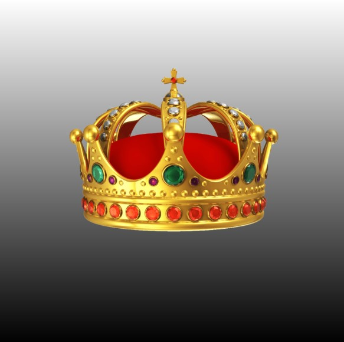

Home
ExploreCSS
Explore
Notifications
Messages
Bookmarks
Lists
Profile
Tuit
Reply
For you
Trending
News
Sports
Entertainment
Event
LIVE

The Coronation of King Charles III
Trending in News
Meghan
56.1k Tuits
Trending
Startlink
26.4k Tuits
Trending in Business personalities
Warren Buffet
5,502 Tuits
Trending in Political figures
Poland
29.9k Tuits
Celebrities Trending
Denzel Washington
1,215 Tuits